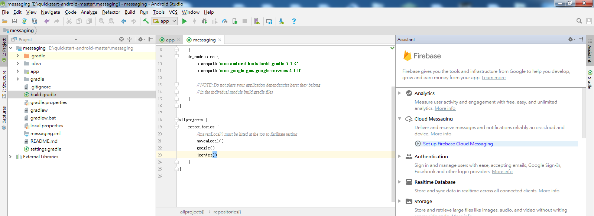
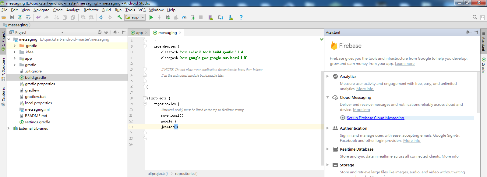

[RTL8722CSM] [RTL8722DM] Use MDNS To Let Arduino IDE Find Ameba¶
Preparation
Ameba x 1
Example
mDNS (Multicast DNS) is a protocol used in the local area network. It delivers the network information like IP address and provided services to others. mDNS is based on the UDP protocol, and it sends packets to 224.0.0.251 with port 5353 under IPv4 address. The naming style for the service follows the format: {Instance Name}.{Protocol Name}.{Domain}
Instance Name: used to identify the name of the service
- Protocol Name: Divided into two parts, the front end is in regard to
the name of the service, and it adds baseline as a prefix. The rear end is in regard to the transport protocol name it used, and it also adds baseline as a prefix
Domain: Local area network in normal cases
For example, Arduino IDE adopts the naming for the mDNS service which is
used in OTA as following: MyAmeba._arduino._tcp.local Among the
naming example, “MyAmeba” can identify the Ameba device name and the
name “MyAmeba” is changeable. “_arduino._tcp” is the protocol that
Arduino IDE adopts, and the Domain is set as local in common. Open the
example, “File” -> “Examples” -> “AmebaMDNS” -> “mdns_on_arduino_ide”
You need to input ssid and password of the AP because the example will
use WiFi connection. And you can find out the naming of the service at
the place where it declares MDNS Service. The example uses the default
name “MyAmeba” and the name is changeable. Next, go to (“Tools” ->
“Port”), and you can find out at least one Serial Port. This port is
simulated by Ameba board via USB. Choose this port and upload the
compiled code to Ameba.
Next, go to (“Tools” ->
“Port”), and you can find out at least one Serial Port. This port is
simulated by Ameba board via USB. Choose this port and upload the
compiled code to Ameba. After uploading the code, press the reset
button on Ameba and waiting for Ameba to connect with AP and activate
the mDNS service after a while. You can see the Log at the bottom of the
Serial Monitor.Then you can find out the added item “Network
Ports” “MyAmeba at 192.168.1.167 (Ameba RTL8722DM/RTL8722CSM)”,
“MyAmeba” is the device name we set up, and “IP” is the IP address that
AP assigned to Ameba, the IP address should be the same with the IP
shown in the Serial Monitor. Last, “Ameba RTL8722DM/RTL8722CSM” is the
type name of the board, and it means that Ameba can let Arduino IDE
identify the mDNS service successfully.(We still can not use the
Internet to upload the code, and we will explain this part in the OTA
example.)
After uploading the code, press the reset
button on Ameba and waiting for Ameba to connect with AP and activate
the mDNS service after a while. You can see the Log at the bottom of the
Serial Monitor.Then you can find out the added item “Network
Ports” “MyAmeba at 192.168.1.167 (Ameba RTL8722DM/RTL8722CSM)”,
“MyAmeba” is the device name we set up, and “IP” is the IP address that
AP assigned to Ameba, the IP address should be the same with the IP
shown in the Serial Monitor. Last, “Ameba RTL8722DM/RTL8722CSM” is the
type name of the board, and it means that Ameba can let Arduino IDE
identify the mDNS service successfully.(We still can not use the
Internet to upload the code, and we will explain this part in the OTA
example.) If you cannot find the Network ports on your Arduino
IDE, please check：
If you cannot find the Network ports on your Arduino
IDE, please check：
{kind=link}
Does your computer in the same local area network with the Ameba?
Restart the Arduino IDE, and it will find the mDNS service again
- Check the Log in Serial Monitor if the Ameba connects to the AP and
activate mDNS service successfully
Code Reference
The program set up the mDNS service in the beginning, the first parameter is Instance Name, and it is changeable in this example. The second parameter is the protocol that the service used, and it would be “_arduino._tcp” for Arduino IDE. The third parameter is Domain, and it would be “local” in common. The fourth parameter is the port number for the service, it is 5000 here and we doesn’t use it in the example.
MDNSService service(“MyAmeba”, “_arduino._tcp”, “local”, 5000);
After connected to the network, we set up some text fields for the service. For the following example, “board” is the name of the field, “ameba_rtl8721d” is the value of the field. “board” is used to let Arduino IDE check installed SDK to see if it exists known device or not. We will use the name of the device if there is known device, users can change “ameba_rtl8721d” to “yun” or other names to find out what’s the difference if interested.
service.addTxtRecord(“board”, strlen(“ameba_rtl8721d”), “ameba_rtl8721d”);
Then we add three text fields “auth_upload”, “tcp_check”, and “ssh_upload”, this example does not activate these services.
service.addTxtRecord(“auth_upload”, strlen(“no”), “no”);
service.addTxtRecord(“tcp_check”, strlen(“no”), “no”);
service.addTxtRecord(“ssh_upload”, strlen(“no”), “no”);
Next we activate MDNS
MDNS.begin();
and register to the mDNS service.
MDNS.registerService(service);